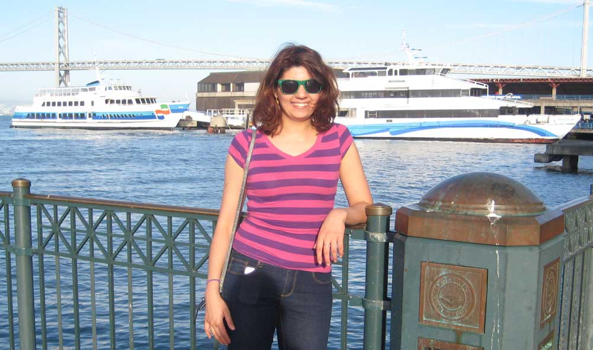

Estapraq Kahlil
Biography
Hello. My name is Estapraq. I am studying mathematics in Oklahoma and am from Iraq. My interest in math started at a very early age.
The image above is a picture of me in California in the summer of 2014. I have loved traveling since I visited Jordan. Smelling the tea on the streets of Istanbul or the magnificence of the mountains of Lebanon.
Curriculum vitae
I'm finishing my PhD in mathematics from the University of Oklahoma under the advisement of professor John Albert. My graduate and undergraduate work are focused on mathematics and software development. My work and academic experience is summarized below. (Download a PDF of my CV)
Education
-
PhD, Mathematics
University of Oklahoma, Spring 2015 -
MS, Mathematics
University of Oklahoma, Fall 2012 -
MS, Mathematics and Computer Applications
Al-Nahrain University, Fall 2005 -
BS, Mathematics and Computer Applications
Al-Nahrain University, Spring 2003
Publications
Albert, J & Khalil, E., Existence and stablity of solitary-wave solutions for an averaged NLS Equation. (to appear 2015)
Academic Experience
Al-Mustansiriya University - Baghdad, Iraq
Instructor from March 2006 to November 2007 for the following:
- Calculus II
- Ordinary Differential Equations
University of Oklahoma - Norman, OK
Courses graded from Fall 2011 to present include the following:
- Pre-Calculus
- Calculus I, II, III
- Linear Algebra
- Ordinary Differential Equations
- Numerical Analysis
- Partial Differential Equations
- Physical Mathematics I, II
Courses instructed include the following:
- Calculus I, discussion and full course instructor
- Critical Thinking, discussion
- Calculus II, discussion
Public Sector Experience
Dawson Geophysical Company - Oklahoma City, OK
Software developer from February 2014 to present.
Professional Workshops
The following are conferences and workshops attended.
Applications of Partial Differential Equations in Science and Engineering, Oklahoma State University, Stillwater, OK, November 12-13, 2011
Applications of Partial Differential Equations in Science and Engineering, University of Oklahoma, Norman OK, October 9-10, 2010
University of Oklahoma, Norman, OK, September 29th, 2012.
Science Museum Oklahoma in Oklahoma City, OK, October 9th, 2012.
Georgia Tech, Atlanta, Georgia, March 16-20, 2013.
Applications of Partial Differential Equations in Science and Engineering, Oklahoma State University, Stillwater, OK, October 26-27, 2013
Dispersive Partial Differential Equation, MSRI, Berkeley, CA, June 17-27, 2014.
Applications of Partial Differential Equations in Science and Engineering, Oklahoma State University, Stillwater, OK, July 21-25, 2014.
Harmonic Analysis and Partial Differential Equations: Recent Developments and Future Directions, The University of Chicago, Chicago, IL, September 19-21, 2014.